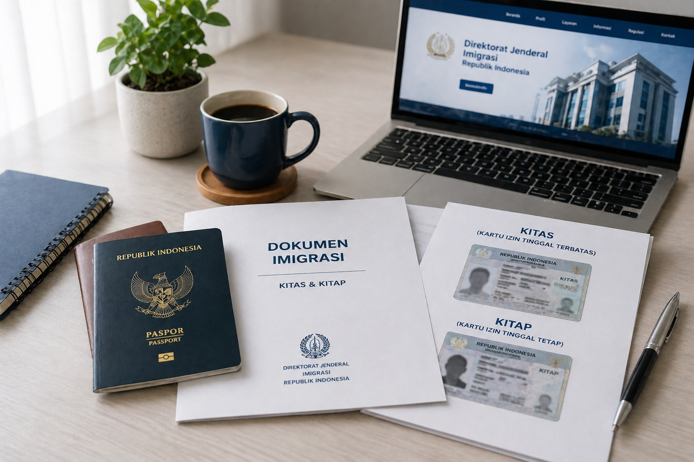

Pengurusan KITAS dan KITAP di Bali
Panduan lengkap mengenai pengurusan KITAS dan KITAP di Bali mulai dari pengertian, perbedaan, syarat, hingga proses pengajuan secara detail.
✔ Legal & resmi sesuai imigrasi
✔ Proses jelas & terstruktur
✔ Cocok untuk WNA tinggal di Indonesia

Apa Itu KITAS?
KITAS (Kartu Izin Tinggal Terbatas) adalah izin tinggal sementara yang diberikan kepada Warga Negara Asing (WNA) untuk tinggal di Indonesia dalam jangka waktu tertentu.
KITAS biasanya digunakan oleh WNA yang datang ke Indonesia untuk bekerja, berbisnis, mengikuti pasangan, atau tinggal dalam jangka waktu terbatas.
Fungsi KITAS antara lain:
- Izin tinggal sementara secara legal di Indonesia
- Digunakan untuk bekerja sesuai izin yang berlaku
- Keperluan bisnis atau investasi
- Mendukung administrasi seperti rekening bank dan pajak
Apa Itu KITAP?
KITAP (Kartu Izin Tinggal Tetap) adalah izin tinggal jangka panjang bagi WNA yang ingin menetap lebih lama di Indonesia.
KITAP umumnya diberikan kepada WNA yang telah memiliki KITAS dan memenuhi persyaratan tertentu.
Fungsi KITAP antara lain:
- Izin tinggal jangka panjang di Indonesia
- Status lebih stabil dibanding KITAS
- Tidak perlu perpanjangan sesering KITAS
- Mempermudah berbagai urusan administrasi
Perbedaan KITAS dan KITAP
KITAS = izin tinggal sementara
KITAP = izin tinggal tetap / jangka panjang
- KITAS memiliki masa berlaku terbatas
- KITAP memiliki masa berlaku lebih panjang
- KITAS memerlukan perpanjangan berkala
- KITAP lebih stabil untuk tinggal lama
Syarat Pengurusan KITAS di Bali
- Paspor yang masih berlaku
- Visa sesuai tujuan tinggal
- Foto terbaru
- Sponsor atau penjamin (perorangan / perusahaan)
- Dokumen pendukung lainnya
Syarat Pengurusan KITAP di Bali
- Memiliki KITAS sebelumnya
- Paspor yang masih berlaku
- Surat rekomendasi (jika diperlukan)
- Bukti kemampuan finansial
- Dokumen pendukung lainnya
Proses Pengurusan KITAS di Bali
1. Pengajuan Visa
Pengajuan visa sesuai tujuan tinggal.
2. Persiapan Dokumen
Menyiapkan semua dokumen yang dibutuhkan.
3. Pengajuan ke Imigrasi
Dokumen diajukan ke kantor imigrasi.
4. Proses Verifikasi
Pemeriksaan data oleh pihak imigrasi.
5. Penerbitan KITAS
KITAS diterbitkan setelah disetujui.
Proses Pengurusan KITAP di Bali
1. Pengajuan dari KITAS
Pengajuan dilakukan setelah memenuhi syarat dari KITAS.
2. Verifikasi Data
Pengecekan kelengkapan dokumen.
3. Persetujuan Imigrasi
Jika disetujui, lanjut ke tahap penerbitan.
4. Penerbitan KITAP
KITAP diterbitkan sebagai izin tinggal tetap.
Keuntungan Memiliki KITAS & KITAP
- Legal tinggal di Indonesia
- Memudahkan aktivitas sehari-hari
- Akses layanan publik lebih mudah
- Mendukung aktivitas kerja dan bisnis
Tips Agar Pengurusan Lebih Lancar
- Pastikan dokumen lengkap
- Gunakan sponsor yang jelas
- Ikuti prosedur resmi
- Gunakan bantuan profesional jika diperlukan
Solusi Praktis Tanpa Ribet
Untuk proses yang lebih mudah dan efisien, Anda dapat menggunakan layanan dari
Rizch Service yang siap membantu pengurusan KITAS dan KITAP secara profesional.
Dengan pendampingan yang tepat, proses menjadi lebih cepat, aman, dan minim kesalahan.
📲 Konsultasi via WhatsApp
FAQ Seputar KITAS dan KITAP
Apa perbedaan utama KITAS dan KITAP?
KITAS bersifat sementara, sedangkan KITAP untuk tinggal jangka panjang.
Apakah KITAS bisa diperpanjang?
Ya, KITAS dapat diperpanjang sesuai ketentuan yang berlaku.
Apakah semua WNA bisa langsung mendapatkan KITAP?
Tidak, biasanya harus melalui tahap KITAS terlebih dahulu.
← Lihat Artikel Lainnya